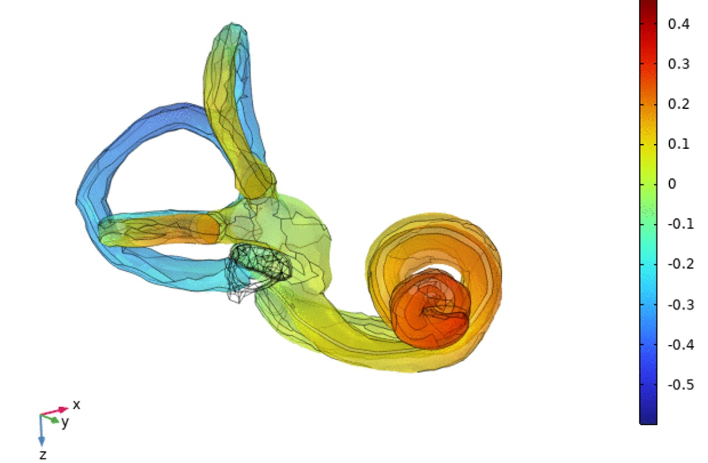

연구
모델링과 시뮬레이션, 실험, 그리고 AI — 여섯 개의 연구 축을 소개합니다.

Hearing through vibration
소리가 두개골 진동을 타고 귀로 전달되는 원리를 사람 머리 모델로 규명합니다.
자세히 보기 →
Vestibular mechanics & comfort
귓속 전정기관을 모델링해 멀미가 생기는 원리를 밝히고 이를 줄이는 방법을 찾습니다.
자세히 보기 →
Vibration therapeutics for the brain
알츠하이머 치료를 위한 진동 자극이 뇌에 어떻게 전달되는지 시뮬레이션합니다.
자세히 보기 →
AI-driven motion prediction
입는 로봇이 착용자의 움직임을 미리 예측해 알맞은 힘으로 보조하도록 만듭니다.
자세히 보기 →
Biomechanics of the shoulder
실험 장치와 시뮬레이션, AI 영상 분석으로 어깨 질환과 수술을 연구합니다.
자세히 보기 →
Data-driven wildfire prediction
산불 데이터로 시설물 취약성을 평가하고 국소 바람장을 예측하는 모델을 만듭니다.
자세히 보기 →